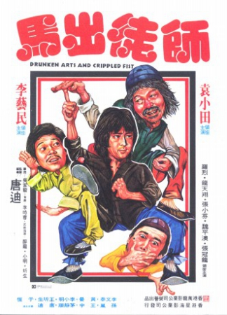
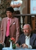

Also known as:Guai quan xiao zi (original title)
Country:Hong Kong, 80 minutes
Spoken languages:Mandarin
Genres:Action, Comedy
Director(s):Ti Tang
Writer(s):
Video Codec:Unknown
Number: 2732


Certification:Not Rated
Storyline:
A wealthy man sends his young son away to learn Kung Fu from the drunken master. When he returns he gets involved in a fight between a local thug, who employs various fighters to do away with the boy and his father and take contro...
Cast: 


Medium: Original DVD,
Comments: Part of: The Martial Arts Essentials Volume 6 - Drunken Masters
Loaned: No
Aspect ratio: Unknown